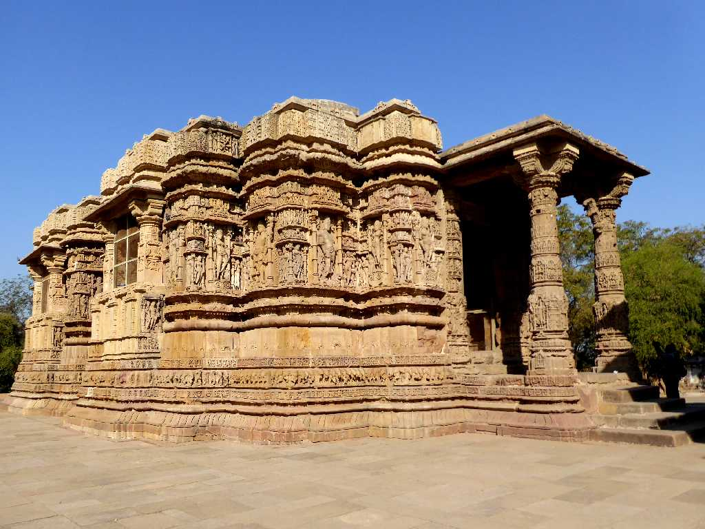
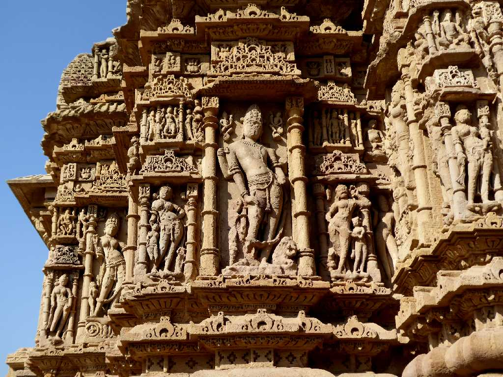
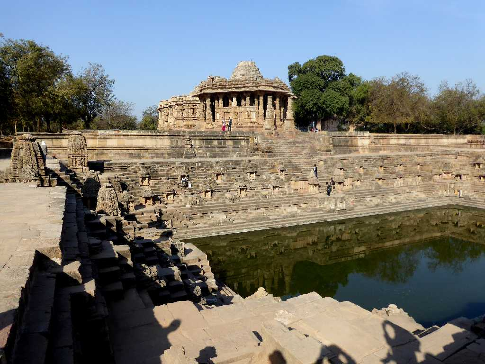
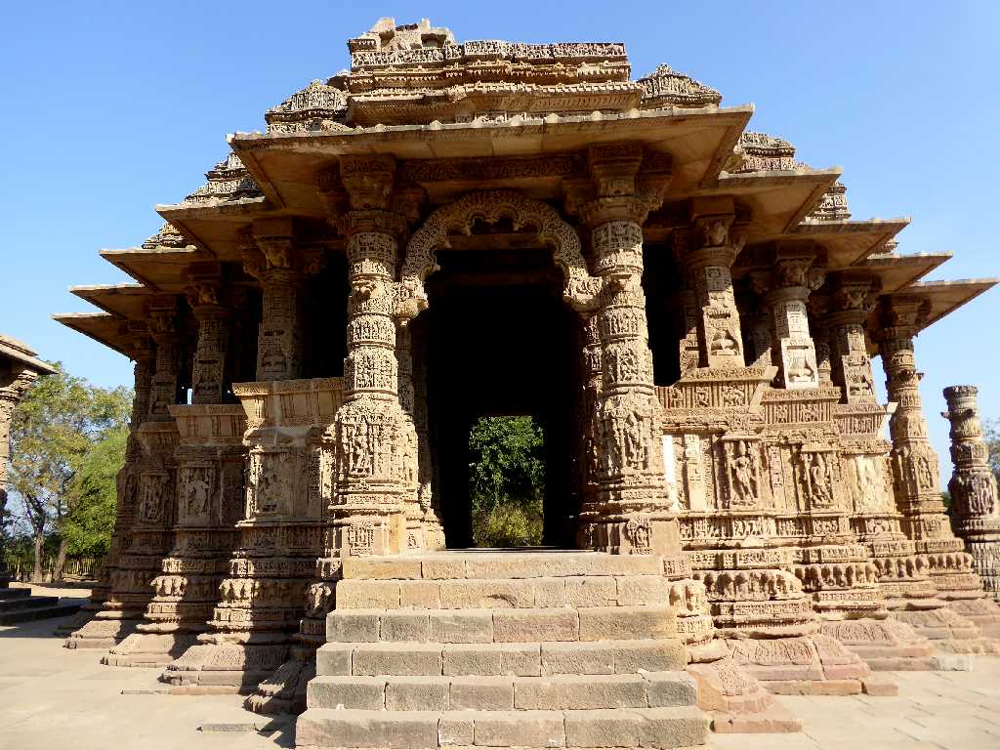
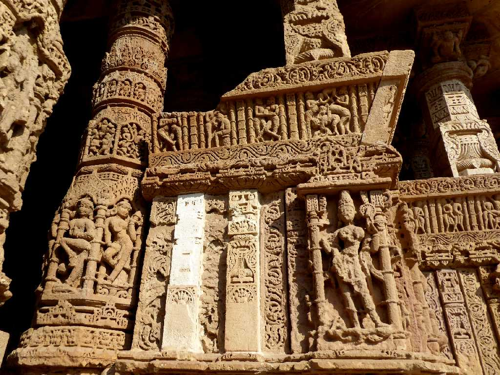
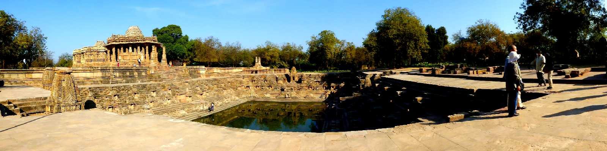
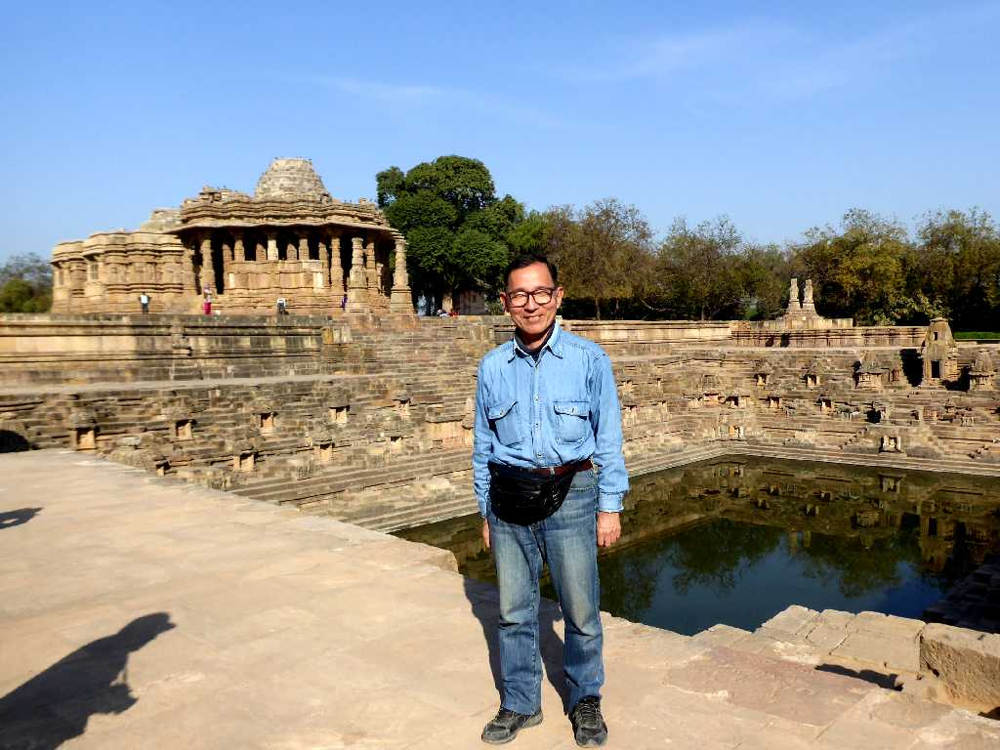
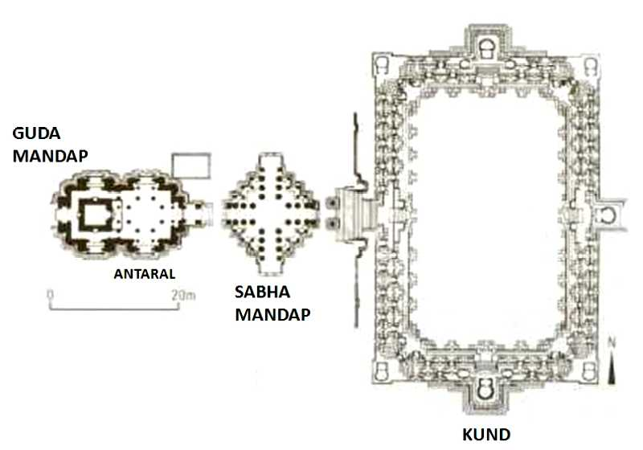

Guda Mandap Sun Temple (Surya Temple) Modhera
１０２６年に創られた太陽神スーリヤを祀るヒンドゥー教のモデラ太陽神寺院

Statue Guda Mandap Sun Temple
蓮の上に立つ太陽神スーリヤ
Statue Guda Mandap Sun Temple
太陽神スーリヤを囲むヴィシュヌ神などの神々

Sun Temple Modhera
太陽神寺院の前面に広がる美しい階段池

Sabha Mandap Sun Temple
宗教儀礼などが行われた集会場

Statue Sabha Mandap Sun Temple
叙事詩や神話などが刻まれている

Kund Sun Temple

January 26 2018 Sun Temple
